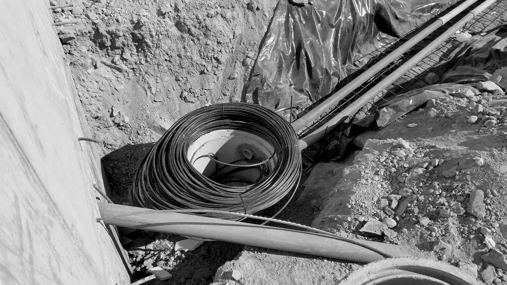
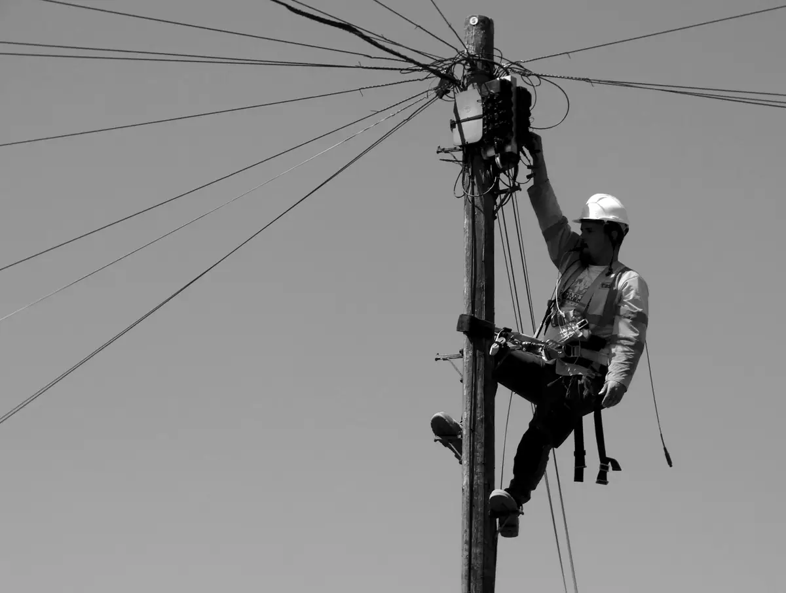
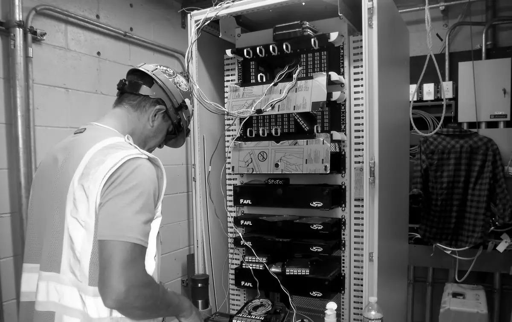
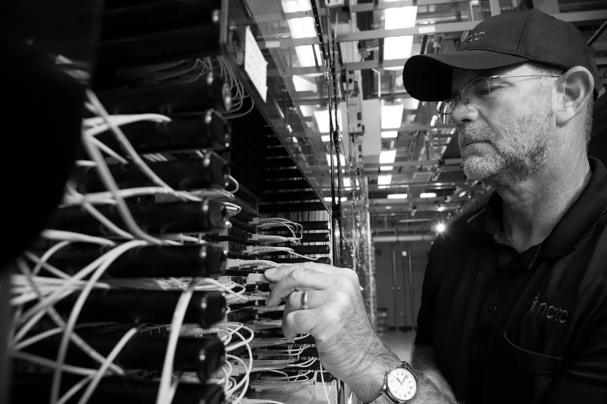
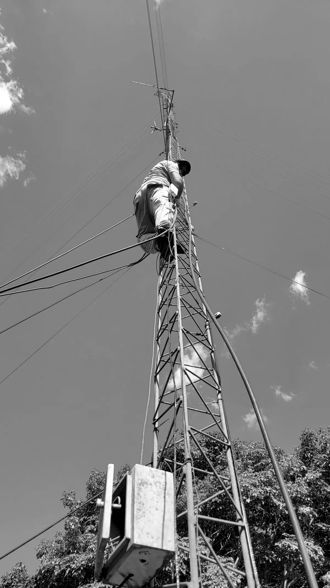

01
Network Construction
We support the construction and deployment of telecommunications infrastructure, working to your project's scope and requirements.
Network construction servicesTelecom infrastructure + workforce
From telecommunications infrastructure construction and maintenance to skilled workforce solutions, Seudocom helps businesses keep critical networks moving.

Who we are
Networks depend on physical work: building them, keeping them running, and having the right people available to do both. Seudocom supports the construction, maintenance and operational needs of telecommunications networks, for organizations that need a capable partner on the ground.
Services

We support the construction and deployment of telecommunications infrastructure, working to your project's scope and requirements.
Network construction services
We support the upkeep of existing infrastructure, helping network owners and operators keep their networks reliable over time.
Network maintenance services
We supply telecommunications professionals to support infrastructure projects and operational requirements.
Telecom workforce solutionsWhy Seudocom
Telecommunications infrastructure is our business, not a side line. It is the center of how we think about every engagement.
Infrastructure and people are part of the same offer, so you can talk to one company about the work and who will do it.
We start from your scope, your site and your requirements, and shape our support to fit them.
We aim to be straightforward to work with: clear about what we can do, and accountable for what we take on.
Careers
Seudocom is building a network of telecommunications professionals. Explore opportunities and submit your application for consideration.
Explore Careers